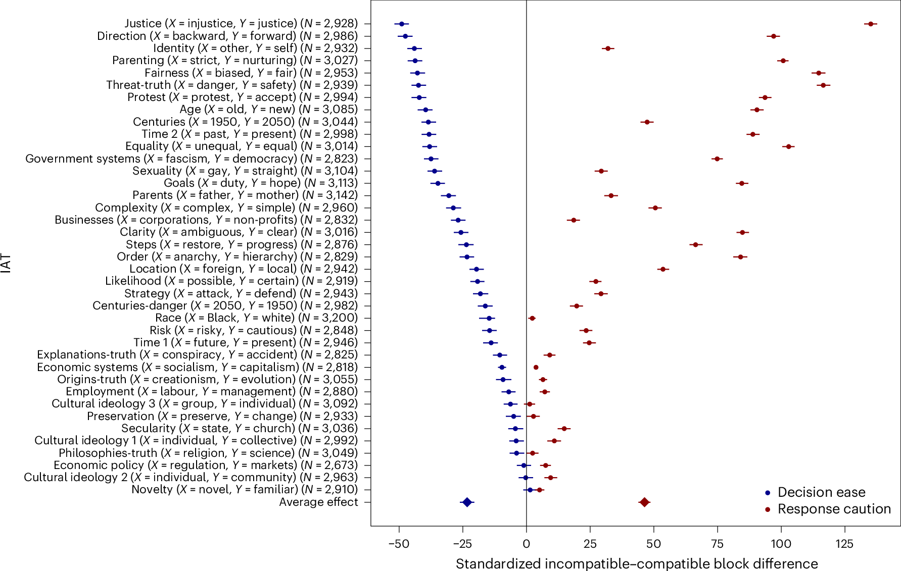
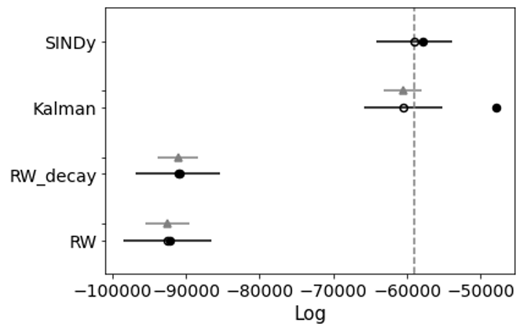
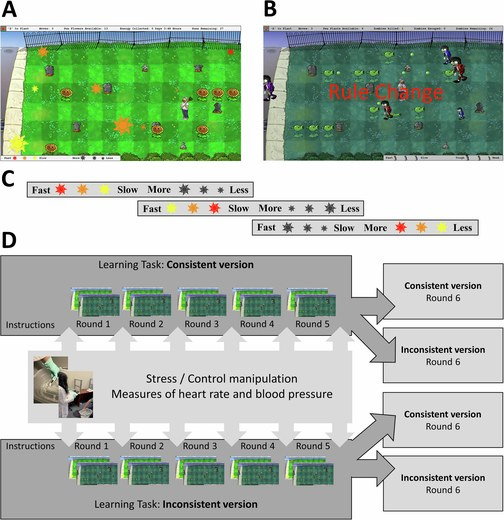

My research program builds a computational social psychology of control. I ask how much control people have over the expectations, emotions, and lay beliefs that quietly enter their judgments and their organizations' judgments, and what determines that control. The word control matters in two senses: psychologically, as the capacity to manipulate prepotent behavior, and methodologically, as the inputs or control variables that steer dynamical systems over time.
I study control at three connected levels: whether a judgment reflects an adjustable policy rather than a fixed reflex, which inputs shape the temporal dynamics of expectation and emotion, and how environments or institutions expand or constrain people's ability to revise what they expect.
Research Line 1: How Much Control Do We Have Over the Judgments We Make?
Fast judgments can look automatic from the outside, but they often contain separable processes that are more or less controllable. This line asks when bias reflects fixed association, adjustable caution, urgency, evidence accumulation, or the decision rules people use under pressure.
Click to expand/collapse projects and papers.

Source: LaFollette, Rubez, Demaree, & Goldenberg, Nature Human Behaviour, 2026.
Research Line 1: How Much Control Do We Have Over the Judgments We Make?
Fast judgments can look automatic from the outside, but they often contain separable processes that are more or less controllable. This line asks when bias reflects fixed association, adjustable caution, urgency, evidence accumulation, or the decision rules people use under pressure.

Published
- LaFollette, K. J., Rubez, D., Demaree, H. A., & Goldenberg, A. (2026). Challenging the mechanism for the implicit association test. Nature Human Behaviour. https://doi.org/10.1038/s41562-026-02439-y
- Goldenberg, A., LaFollette, K. J., Huang, Z., Weisz, E., & Cikara, M. (2025). Judgment of crowds as emotional increases with the proportion of Black faces. Scientific Reports, 15, 35208. https://doi.org/10.1038/s41598-025-95029-3
- LaFollette, K. J., Fan, J., Puccio, A., & Demaree, H. A. (2024). FlexDDM: A flexible decision-diffusion Python package for the behavioral sciences. In L. K. Samuelson, S. Frank, M. Toneva, A. Mackey, & E. Hazeltine (Eds.), Proceedings of the Annual Meeting of the Cognitive Science Society, 46.
- LaFollette, K. J., & Demaree, H. A. (2022). Comparing the effects of stress on directed and random exploration. Proceedings of the 5th Multidisciplinary Conference on Reinforcement Learning and Decision Making.
- LaFollette, K. J., Kotynski, A. E., Merner, A. R., Lim, R., Jiang, H., & Demaree, H. A. (2021). Exposure to discrete emotions influence processes of evidence accumulation in reinforcement-learning. Proceedings of the Annual Meeting of the Cognitive Science Society, 43, 486-492.
In Review and In Preparation
- LaFollette, K. J., Rubez, D., & Demaree, H. A. (Revise & Resubmit; Emotion). Implicit emotional biases shape emotion inference through racialized evidence and gendered urgency.
- Barnett, M. K., LaFollette, K. J., & Macnamara, B. N. (Submitted). Math anxiety and maladaptive decision making: Sensitivity to risk, effort, and fear predict math avoidance decision.
- LaFollette, K. J., & Rocklage, M. D. (In Preparation). Beyond good and bad: Extremity and emotionality contribute to decision processes in the Implicit Association Test.
- LaFollette, K. J., Fan, J., Puccio, A., & Demaree, H. A. (Submitted). Democratizing diffusion decision models: A comprehensive tutorial on developing, validating, and fitting diffusion decision models in Python with FlexDDM. https://doi.org/10.31234/osf.io/j9m67
Research Line 2: Identifying the Controllable Levers in How Expectations and Emotions Change Over Time
Expectations and emotions are not static states; they are trajectories. This line asks which inputs steer those trajectories, including reward feedback, emotional momentum, exogenous events, social sharing, listener responses, and AI-mediated conversations.
Click to expand/collapse projects and papers.

Source: LaFollette, Yuval, Schurr, Melnikoff, & Goldenberg, PNAS, 2025.
Research Line 2: Identifying the Controllable Levers in How Expectations and Emotions Change Over Time
Expectations and emotions are not static states; they are trajectories. This line asks which inputs steer those trajectories, including reward feedback, emotional momentum, exogenous events, social sharing, listener responses, and AI-mediated conversations.

Published
- LaFollette, K. J., Yuval, J., Schurr, R., Melnikoff, D., & Goldenberg, A. (2025). Data-driven equation discovery reveals nonlinear reinforcement learning in humans. Proceedings of the National Academy of Sciences, 122(31), e2413441122. https://doi.org/10.1073/pnas.2413441122
In Review and In Preparation
- Prince, C., Demaree, H. A., & LaFollette, K. J. (Revise & Resubmit; Journal of Personality and Social Psychology). Internal and external forces shape human emotion. https://doi.org/10.31234/osf.io/jvxza_v3
- LaFollette, K. J., Demaree, H. A., & Goldenberg, A. (In Preparation). Social sharing modulates the dynamics of affective arousal. Working paper.
- LaFollette, K. J., Chi, V. B., & Goldenberg, A. (In Preparation). Wanting to vent, needing advice: People overestimate the benefits of venting, and AI responds with less escalation than humans.
- Yousef, S. M., LaFollette, K. J., Miller, L., Doherty, J., & Schroeder, J. (In Preparation). Disconnect to reconnect: Digital detoxing boost attention, reduces distress, and increases well-being.
Research Line 3: Environments That Support or Undermine Control Over Expectations
Control does not begin inside the individual alone. This line asks how neighborhoods, workplaces, institutions, and team structures teach people what change seems possible, and how those environments can reveal or conceal competence, learning, and potential.
Click to expand/collapse projects and papers.

Source: LaFollette, Frank, Burgoyne, & Macnamara, Communications Psychology, 2026.
Research Line 3: Environments That Support or Undermine Control Over Expectations
Control does not begin inside the individual alone. This line asks how neighborhoods, workplaces, institutions, and team structures teach people what change seems possible, and how those environments can reveal or conceal competence, learning, and potential.

Published
- LaFollette, K. J., Frank, D. J., Burgoyne, A. P., & Macnamara, B. N. (2026). Task, person, and experiential characteristics drive the transfer of learning. Communications Psychology, 4, 42. https://doi.org/10.1038/s44271-026-00408-9
- Barnett, M. K., LaFollette, K. J., & Macnamara, B. N. (2024). Distraction in math anxious individuals during math effort-based problem solving. In L. K. Samuelson, S. Frank, M. Toneva, A. Mackey, & E. Hazeltine (Eds.), Proceedings of the Annual Meeting of the Cognitive Science Society, 46.
In Review and In Preparation
- Rubez, D., Vázquez, J. I., & LaFollette, K. J. (Submitted). From structure to mindset, not mobility: Neighborhood scarcity drives implicit attitudes toward change.
- LaFollette, K. J., Frank, D. J., Burgoyne, A. P., & Macnamara, B. N. (Revise & Resubmit; Organizational Behavior and Human Decision Processes). Multi-tasking versus multi-learning: Performance but not learning suffers when pursuing simultaneous goals.
- LaFollette, K. J., Johnson, W., & Macnamara, B. N. (In Preparation). Effective leaders prevent knowledge lock-in by restructuring networks.